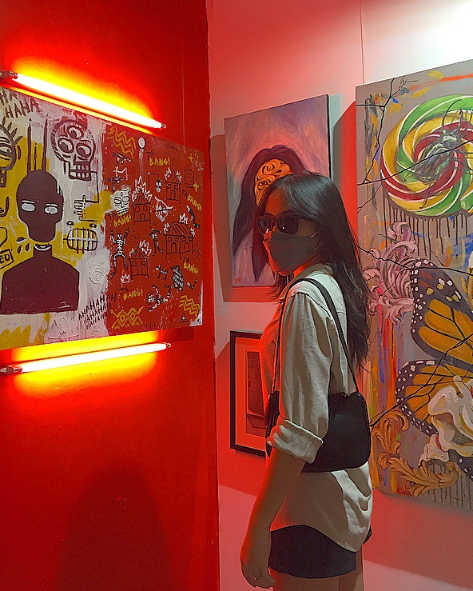

Hi!
I'm Leah Lamorin,
BSCS Student. My Portfolio.

BSCS Student. My Portfolio.
I am Leah Lamorin, a BSCS student from UIC. I was born and raised in Davao. I've always been passionate about learning and trying new things, which I enjoyed about being in challenging life events. Ive always dreamt of being part of the Google Developer Team, which made the UIC likely a dream.
In my first year of college, I was a part of the GDSC, which helped me reach various activities and programs that opened our minds to communicating and helped me adopt new learning and skills that I could practice and master.
Dancing allows me to connect with music that has an impact on my body, minds, and thoughts. I've learned a lot about life, myself, and how to listen to and comprehend my emotions by means of dance.
Also, My favorite sport is volleyball since it's an ideal means to have fun and stay active. It's a fun activity to play since it requires working together, communicating, and strategy.